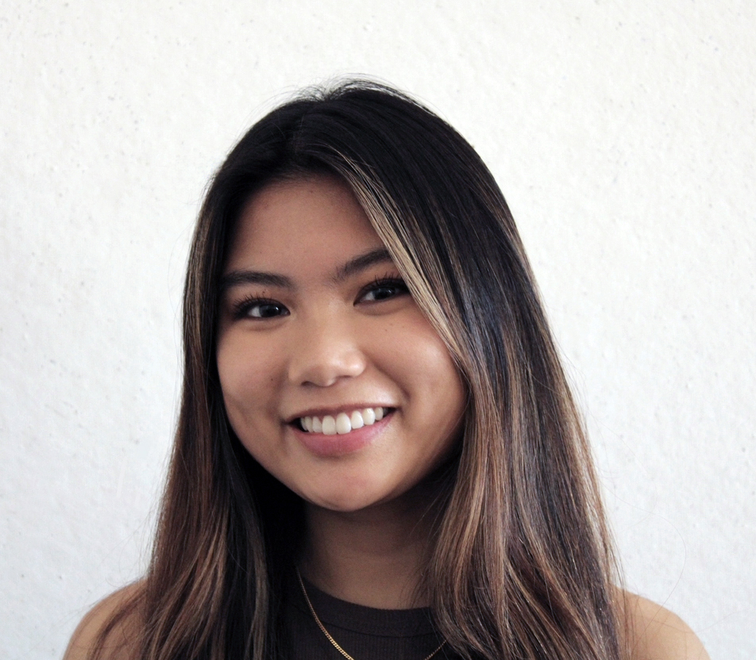

I’m Gigi Pham-Ton - a graphic designer dedicated to the balance of visuals and function.
I graduated from Virginia Commonwealth University School of the Arts, where I received my BFA in Graphic Design, earned a certificate in Computing Fundamentals, and completed studies in Product Innovation.
I’ve had the opportunity to work with various clients and companies, some of which include non-profits, small businesses, and more. I believe that design is a versatile tool that can be used for diverse and inclusive causes.
With these experiences, I’ve been able to fine-tune my creative skills and processes.
Outside of design, I still love to embrace my artistic side. Sketching, painting, and sculpting have always been major parts of my life that generate inspiration.
In my day-to-day routine, you can also find me caring for my plants and animals, trying out cultural recipes, or reconnecting with nostalgic video games.